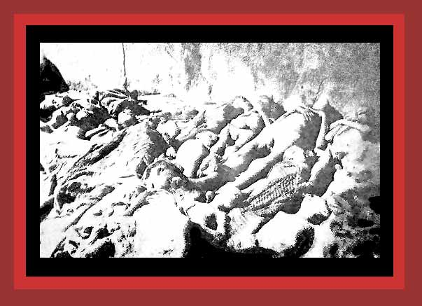

From 1900 to 1923, Turkish dictators murdered about 2,100,000 Armenians. Here are some of the murdered. For documentation, see
Death By Government
and
Statistics of Democide
. Source:
"Pictures of the Armenian genocide"
.
Next
photo of those murdered by government
Return
to Photographs of Democide, Room 1
Home